니콜은 누구인가요
니콜은 2년 동안 앱 네 개를 만든 소비자용 앱 창업가예요. 코딩은 공동 창업자가 맡고, 니콜은 디자인과 유통처럼 코딩이 아닌 일을 전부 맡아요. 지금 운영하는 앱들은 틱톡, 인스타그램, 유튜브 쇼츠에서 한 달에 4억~5억 회 조회수를 만들어요.
영상은 이 숫자보다 '어떻게'에 집중해요. 한 번 터진 바이럴은 운일 수 있지만 매달 반복되면 시스템이라는 거예요. 니콜은 잘되는 콘텐츠를 찾고, 크리에이터에게 그 방식을 가르치고, 수십~수백 명이 반복하게 만드는 구조를 만들었어요.
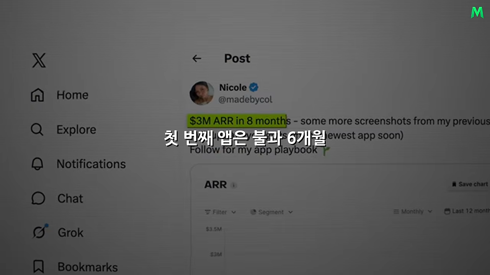
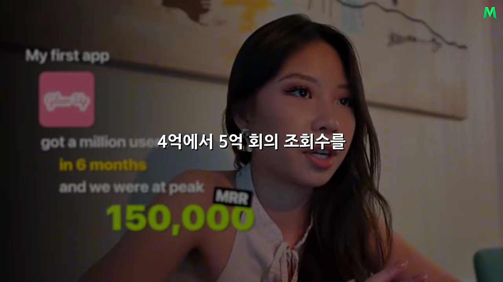
앱보다 콘텐츠를 먼저 배웠어요
대학생 니콜은 원래 부동산이나 컨설팅 쪽을 생각했어요. 2학년 때 진로 고민 끝에 혼자 유럽 여행을 떠났고, 틱톡에 팟캐스트 형식 콘텐츠를 올렸어요. 10일 만에 팔로워가 1만 명으로 늘었죠. 사람들이 무엇에 반응하고 관심이 어떻게 퍼지는지를 이때 처음 몸으로 배웠어요.
그래도 인플루언서가 되진 않았어요. 샌프란시스코의 기술 스타트업에서 마케팅 일을 시작했고, 거기서 공동 창업자 에런(Aaron)을 만났어요. 니콜이 대학을 마치러 로스앤젤레스로 돌아간 뒤, 10분짜리 통화 끝에 둘은 앱을 같이 만들기로 정했어요.
글램업과 스프라우트, 두 앱
글램업: 이미 증명된 수요를 다른 고객에게
글램업은 세상에 없던 아이디어가 아니었어요. 당시 남성 외모 개선 앱이 크고 있었는데, 여성 메이크업·뷰티 시장에는 그런 앱이 거의 없었어요. 다른 시장에서 이미 사람들이 돈을 쓰고 있다는 게 증명된 셈이에요. 니콜은 그 성공을 그대로 베끼지 않고 여성 고객에 맞게 다시 짰어요.
사용자가 셀카를 올리면 얼굴을 바탕으로 색상 분석을 받고, 어울리는 스타일과 외모 개선 가이드, 제품 추천을 받아요. 핵심 기능은 결제해야 쓸 수 있는 하드 페이월 구조이고, 주간·월간 구독으로 매출을 내요.
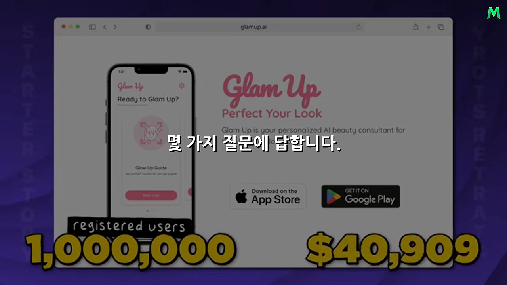
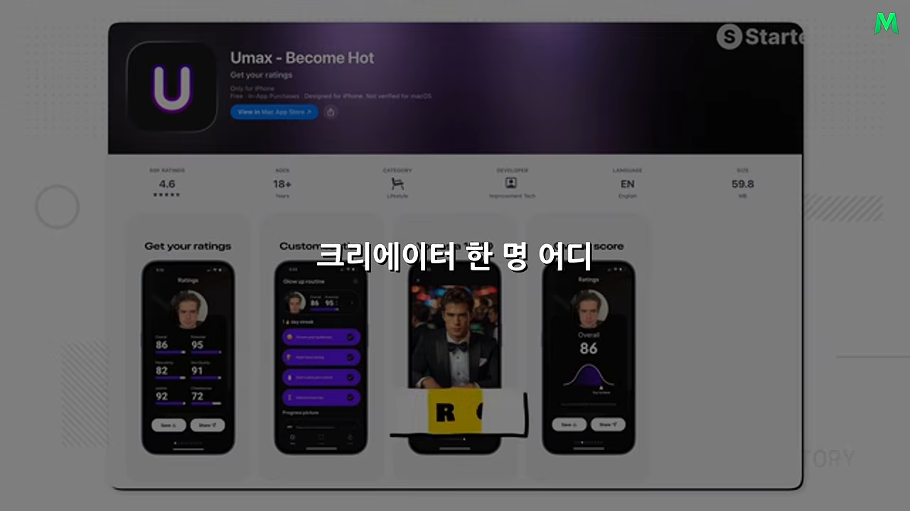
스프라우트: 취업 준비생을 위한 앱
두 번째 앱 스프라우트는 '프리페어 AI'라는 이름으로 시작했어요. 이번엔 뷰티를 벗어나 대학생과 졸업 후 취업을 준비하는 사람에게 집중했어요. 처음에 몇 가지 질문에 답하면 그에 맞는 채용 공고가 떠요. 마음에 드는 공고를 오른쪽으로 넘기면 회사 사이트로 지원하도록 도와주고, 싫으면 넘기면 돼요. 공고에 맞게 이력서를 고쳐 주는 기능도 있어요.
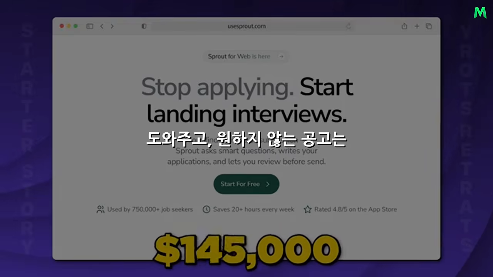
| 앱 | 대상 | 하는 일 | 성과 (원래 인터뷰 기준) |
|---|---|---|---|
| 글램업 | 메이크업·스킨케어를 개선하고 싶은 여성 | 얼굴 사진으로 색상 분석, 스타일·제품 추천 | 6개월 만에 사용자 100만 명, 최고 월 반복 매출 약 15만 달러 |
| 스프라우트 | 대학생, 졸업 후 구직자 | 맞춤 채용 공고, 스와이프 지원, 이력서 수정 | 8개월 만에 월 반복 매출 약 25만 달러, 이후 약 20만 달러 수준 유지 |
| 비공개 앱 2개 | 공개 안 됨 | 공개 안 됨 | 최근 3개월 사이 만들었고 약 20만 달러 MRR 수준 |
내레이션은 비공개 앱 두 개가 '각각 월 수억 원'을 번다고 말해요. 원래 인터뷰에서 니콜은 두 앱이 '약 20만 달러 MRR 수준'이라고만 해서, 각각인지 합계인지는 분명하지 않아요.
앱을 설계할 때부터 유통을 같이 봐요
같은 방식이 앱마다 통했다면 운만으로는 설명이 안 돼요. 니콜의 출발점은 제품과 마케팅을 따로 생각하지 않는 거예요.
많은 창업가는 기능을 완성하고 디자인을 마무리한 뒤, 출시 직전에야 '이걸 어떻게 알리지?'를 고민해요. 니콜은 반대로 앱을 설계할 때부터 유통을 함께 봐요. 첫 화면에서 무엇을 보여 줄지, 온보딩에서 어떤 질문을 할지, 어떤 순서로 가치를 이해시킬지, 언제 결제 화면을 띄울지가 모두 전환율과 이어져요.
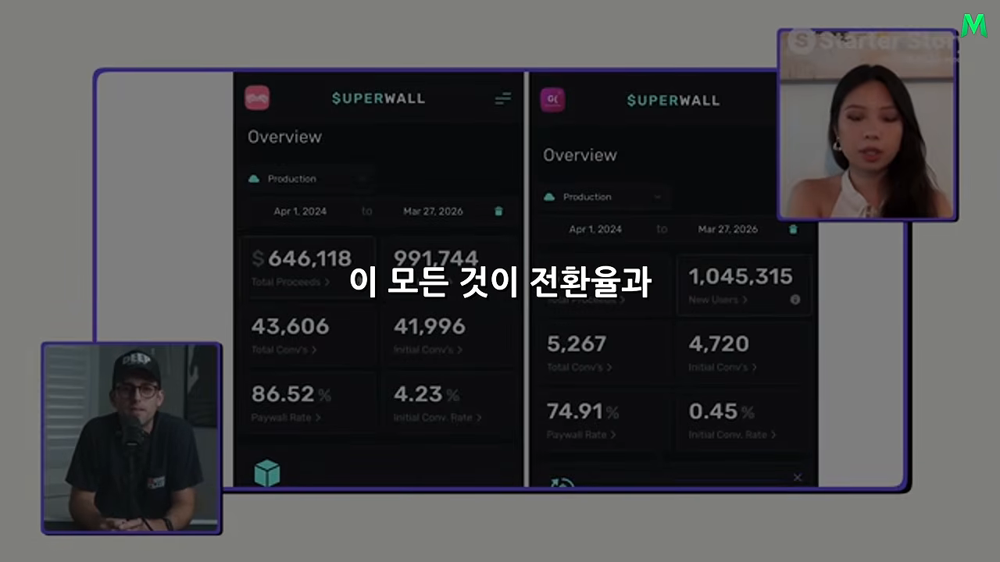
앱 자체가 콘텐츠가 되나요
전환율만큼 중요한 게 하나 더 있어요. 앱이 소셜 미디어에서 퍼질 수 있는 구조인지예요. 앱을 쓰는 모습이 콘텐츠가 될 수 있는지, 앱이 만든 결과를 짧은 영상이나 이미지로 보여 줬을 때 관심을 끄는지, 보는 사람이 '저 앱 뭐지?' 하고 궁금해지는지를 따져요.
여기서 제품과 유통이 만나요. 다 만든 뒤 광고 소재를 억지로 짜내는 게 아니라, 앱 경험 자체가 콘텐츠를 만들기 쉬워야 해요.
소비자 앱에서 유통은 이 정도 규모예요
| 시기 | 조회수 |
|---|---|
| 글램업 전성기 | 틱톡 월 4천만~5천만 회, 인스타그램 월 약 2억 회 |
| 스프라우트 (작년 말) | 월 평균 약 1억 회, 7일 동안 약 4억 회를 찍은 적도 있음 |
| 지금 | 틱톡·인스타그램·유튜브 쇼츠 합쳐 월 4억~5억 회 |
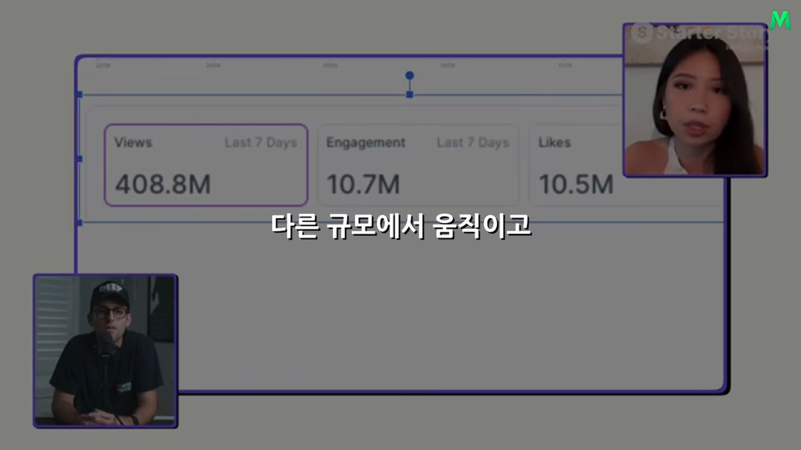
가장 빠르게 키우던 시기에 니콜은 크리에이터 200명 이상을 동시에 관리했어요. 영상 하나가 아니라 수많은 콘텐츠가 한꺼번에 시장에 나가는 거예요. 물론 처음부터 200명이었던 건 아니에요.
통하는 유통 방식부터 찾아요
새 앱을 키운다면 먼저 그 앱에 통하는 유통 방식을 찾아야 해요. '우리는 틱톡 해야 해'라고 미리 정하지 않아요. 가능한 방법을 실제로 시험해요.
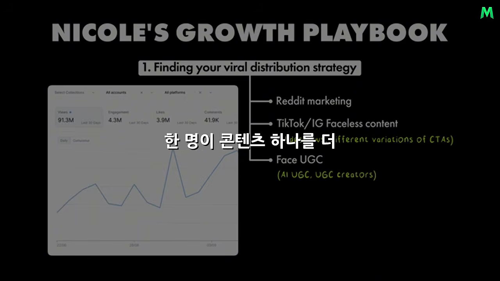
| 후보 | 예시 |
|---|---|
| 레딧 마케팅 | 커뮤니티에 앱을 알리는 방식 |
| 틱톡·인스타그램 페이스리스 콘텐츠 | 이미지를 넘기는 슬라이드쇼, CTA를 바꾼 여러 변형 |
| 얼굴이 나오는 UGC | 실제 크리에이터, 또는 AI로 만든 UGC |
| 유료 채널 (자본이 있다면) | 유료 광고, 인플루언서 마케팅 |
핵심은 어떤 방법이 최고일지 머릿속으로 오래 고민하지 않는 거예요. 시장에서 직접 확인해요.
한 방식을 2~3주 동안 끝까지 파요
테스트할 때 겉만 건드리고 포기하면 안 돼요. 니콜은 전략 하나를 고르면 2~3주 동안 그 안에서 가능한 변형을 최대한 시도해요. 얼굴 없는 콘텐츠가 가능성 있어 보이면 슬라이드형도, 짧은 영상도 해 봐요. 처음 시선을 잡는 부분을 바꾸고, 콘텐츠가 끝난 뒤 앱으로 이끄는 방식도 달리해 봐요.
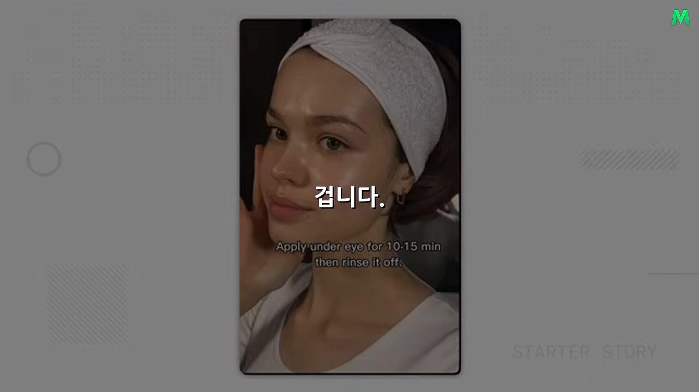
충분히 시험한 뒤에야 패턴이 보여요. 무엇이 반복해서 반응을 얻는지, 어떤 형태가 꾸준히 조회수를 만드는지, 어떤 콘텐츠가 실제 앱 사용으로 이어지는지요. 여기까지가 실험 단계예요.
크리에이터를 뽑고 가르쳐요
승리 패턴을 하나 찾는 순간부터 사업이 달라져요. 이제 니콜 혼자 잘하면 되는 게 아니라, 다른 사람도 같은 결과를 내게 만들어야 해요. 유통을 시스템으로 바꾸는 시작점이에요.
창업자가 먼저 깊이 알아야 해요
니콜의 원칙은 창업자가 앱과 콘텐츠를 크리에이터보다 더 깊이 이해해야 한다는 거예요. 크리에이터를 고용했다고 마케팅에 대한 이해까지 넘기면 안 돼요. 어떤 콘텐츠가 왜 되는지, 사람들이 어디서 관심을 갖는지 알아야 다른 사람을 제대로 가르칠 수 있어요.
you need to have a deeper understanding of your app and your content more than your creators do.
앱과 콘텐츠를 크리에이터보다 더 깊이 이해하고 있어야 해요.
— 원래 인터뷰 (이 영상 08:50 부근)
그래서 처음부터 수십 명을 뽑지 않아요. 직접 만들어 봐도 되고, 카메라 앞이 부담스러우면 크리에이터 2~10명으로 시작해요. 이 작은 그룹이 좋은 결과를 낼 때까지 같이 고쳐요. 몇 명으로도 공식을 못 만들었는데 100명으로 늘리면, 틀린 방식이 100배 빨리 반복될 뿐이에요. 반대로 다섯 명 중 여럿이 반복해서 잘 해낸다면 사람이 늘어도 방식을 전할 수 있어요.
1단계: 맞는 사람 찾기
아무나 뽑지 않아요. 콘텐츠 형식에 따라 필요한 사람이 달라서예요. 카메라를 보고 계속 말하는 형식이면 말을 자연스럽게 잘하는 사람이, 리액션 영상이면 표정을 잘 쓰는 사람이 맞아요. 콘텐츠 전략을 먼저 정하고, 거기에 맞는 사람을 찾아요.
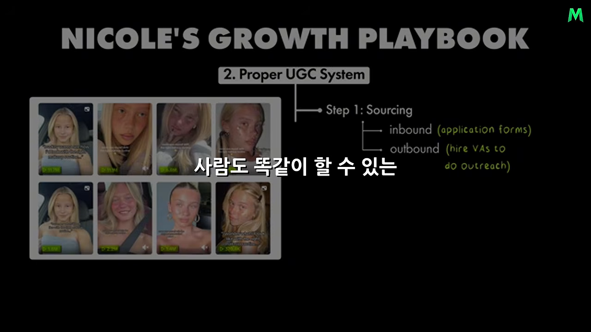
| 방식 | 어떻게 |
|---|---|
| 지원받기 (인바운드) | UGC 커뮤니티, 인스타그램, 레딧 등에 지원 양식을 올려 신청을 받아요 |
| 찾아가기 (아웃바운드) | 맞아 보이는 마이크로 인플루언서나 크리에이터에게 먼저 연락해요. 커지면 이 일만 맡는 사람을 둬요 |
원래 인터뷰에서 니콜은 아웃바운드 연락을 원격 비서(VA)를 고용해 맡긴다고 말해요. 슬라이드의 'hire VAs to do outreach'가 그 뜻이에요.
2단계: 가르치기
좋은 사람이 알아서 좋은 콘텐츠를 만들어 주길 기대하지 않아요. 먼저 인터뷰로 캠페인을 진지하게 할 사람인지 확인해요. 통과하면 앱에 맞춘 교육 과정을 줘요.
스프라우트에는 크리에이터 전용 교육 프로그램이 따로 있어요. 잘된 콘텐츠가 어떤 모습인지, 무엇을 참고해야 하는지, 어떻게 구성해야 하는지를 영상과 모듈로 만들어 뒀어요. 모듈마다 끝에 퀴즈를 넣어서, 영상을 틀어 놓기만 한 게 아니라 실제로 이해했는지 확인해요. 외주를 쓰는 수준이 아니라 회사가 직접 크리에이터를 길러 내는 학교에 가까워요.
결과도 강했어요. 이 과정을 거친 크리에이터 절반 이상이 첫 2주 안에 높은 조회수 콘텐츠를 만들었어요. 바이럴을 만드는 특별한 한 명을 우연히 찾은 게 아니라, 여러 사람이 교육을 받고 높은 확률로 결과를 냈다는 점이 중요해요. 이때부터 개인의 감각이 조직의 시스템이 돼요.
관리하고 시스템으로 키워요
사람을 찾고, 가르치고, 성과를 보고, 피드백하고, 다시 고쳐요. 이 과정을 계속 반복해요. 많은 회사가 '잘하는 크리에이터 한 명 어디 없을까'를 찾을 때, 니콜은 '어떻게 하면 더 많은 사람이 잘할까'를 고민해요.
3단계: 관리하기
사람이 수십, 수백 명으로 늘면 관리가 문제가 돼요. 누가 어떤 콘텐츠를 만드는지 봐야 하고, 성과가 떨어지는 사람에겐 피드백이 필요하고, 새로 찾은 방식은 빨리 퍼뜨려야 해요. 정답은 없고 팀에 맞게 골라요.
- 디스코드 같은 공간에서 크리에이터를 관리해요.
- 2주마다 피드백 미팅을 하거나, 한 달에 한 번 전체 점검을 해요.
- 성과가 가장 좋은 크리에이터를 팀원으로 데려와 다른 크리에이터를 맡겨요. 직접 해 본 사람이 가르치는 구조예요.
여기까지 오면 콘텐츠 제작은 창업자 개인의 일이 아니라 하나의 조직이에요.
4단계: 시스템을 다듬기
조직이 커지면 시스템을 더 정교하게 만들어요. 기존 크리에이터가 새 크리에이터를 소개하면 보상하는 리퍼럴 구조를 만들 수 있어요. 콘텐츠가 많아지면 대시보드가 필요해요. 누가 좋은 결과를 내는지, 어떤 형식이 계속 크는지, 어디서 성과가 떨어지는지를 보며 다음 행동을 정해요.
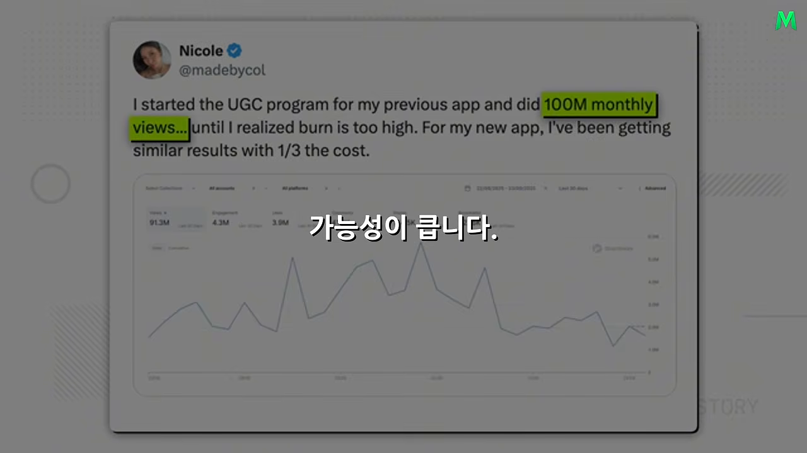
니콜은 매일 아침 '오늘은 무슨 영상을 만들지?'를 처음부터 고민하지 않아요. 시스템 안에서 콘텐츠가 계속 나오고, 데이터가 쌓이고, 잘되는 방식이 다른 사람에게 전해지고, 다시 더 많은 콘텐츠가 만들어져요. 콘텐츠를 만드는 사람과 콘텐츠 시스템을 만드는 사람의 차이예요.
운이 찾아올 면적을 넓혀요
니콜도 첫 영상이 터지는 데는 운이 작용할 수 있다고 인정해요. 하지만 계속 터지는 건 운만으로 설명하기 어렵다고 봐요. 운 자체는 통제하려 하지 않고, 운이 찾아올 기회의 면적을 최대한 넓혀요.
I think you can always maximize the surface area of your luck.
운이 닿을 수 있는 면적은 언제든 넓힐 수 있다고 생각해요.
— 원래 인터뷰 (이 영상 14:21 부근)
한 달에 콘텐츠 두 개 올리는 사람과 수백 개를 체계적으로 시험하는 사람은 같은 게임을 하고 있지 않아요. 어떤 콘텐츠가 터질지는 예측할 수 없어요. 그래도 시도 횟수를 늘리고, 패턴을 빨리 찾고, 그 방식을 조직적으로 반복하면 성공 확률이 달라져요.
AI 시대에 더 귀해지는 능력
만들기는 쉬워지고, 알리기는 귀해져요
AI 덕분에 앱을 만드는 일은 계속 쉬워지고 있어요. 코드를 훨씬 빨리 만들고, 기능 하나 넣는 시간도 줄었어요. 예전엔 기술 장벽 때문에 아이디어를 접던 사람도 이제 제품을 만들 수 있어요.
그런데 반대편이 있어요. 내가 쉽게 만들면 남도 쉽게 만들어요. 비슷한 앱이 빨리 늘어나죠. 그러면 귀해지는 건 고객의 관심이에요. 아무리 좋은 기능을 만들어도 사람들이 존재를 모르면 매출은 없어요. 질문이 '무엇을 만들 수 있나'에서 '사람들이 이걸 어떻게 발견하게 할까'로 옮겨 가요.
이 관점은 원래 인터뷰에서 주로 진행자 팻 월스(Pat Walls)와 프로듀서 거스가 정리한 거예요. 니콜이 직접 'AI 시대'를 말한 대목은 아니에요.
진짜 자산은 반복 가능한 방식이에요
니콜이 코딩을 맡지 않고도 앱 여러 개를 키운 이유가 여기 있어요. 앱이 콘텐츠로 퍼지기 쉽게 설계하고, 여러 유통 방법을 시험하고, 하나가 통하면 깊게 파요. 몇 명에게 가르쳐 재현되는지 보고, 재현되면 사람을 늘리고, 교육과 관리 체계를 붙이고, 데이터로 다시 다듬어요.
첫 앱에서 배운 게 두 번째 앱으로, 더 다듬어진 방식이 세 번째·네 번째 앱으로 넘어갔어요. 그래서 중요한 자산은 영상 하나도, 크리에이터 한 명도, 특정 플랫폼 알고리즘도 아니에요. 잘되는 걸 발견했을 때 다른 사람도 반복할 수 있게 바꾸는 능력이에요.
| 초보자 | 니콜 | |
|---|---|---|
| 질문 | 무엇을 찍을까? | 100명이 좋은 콘텐츠를 계속 만들게 하려면 무엇이 필요할까? |
| 하는 일 | 직접 찍고, 편집하고, 올리고, 조회수 확인 | 뽑기, 교육, 피드백, 성과 측정, 잘된 패턴 공유 |
| 안 될 때 | 의욕이 떨어져요 | 단계를 쪼개서 어디가 안 되는지 고쳐요 |
찾고, 시험하고, 검증하고, 가르치고, 관리하고, 재고, 잘되는 건 키우고, 더는 안 되면 고쳐요. 한 달에 몇 개 만드는 사람과 200명이 동시에 만드는 조직의 차이는 노력의 양이 아니라 시스템이에요.
마지막 조언: 결과보다 과정을 즐기세요
니콜의 마지막 조언은 숫자와 거리가 멀었어요. 과거의 자신에게 한마디 할 수 있다면 결과보다 과정을 즐기라고 하고 싶대요. 사업엔 끝이 없어서예요. 사용자 10만 명을 만들면 100만 명을 원하고, 월 1억을 벌면 2억이, 그다음엔 5억이 목표가 돼요. 결과만 보면 만족하는 순간이 아주 짧아요.
try to always enjoy the journey instead of the results.
결과 대신 과정을 늘 즐기려고 해 보세요.
— 원래 인터뷰 (이 영상 18:13 부근)
성장을 포기하라는 말은 아니에요. 니콜은 누구보다 높은 숫자를 좇고 있어요. 다만 더 큰 숫자를 쫓는 동안 만드는 사람으로서의 재미까지 잃지 말라는 거예요.